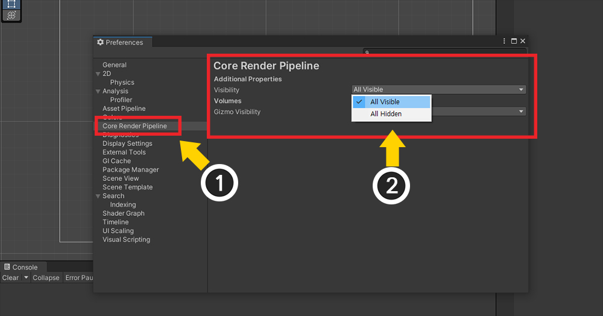
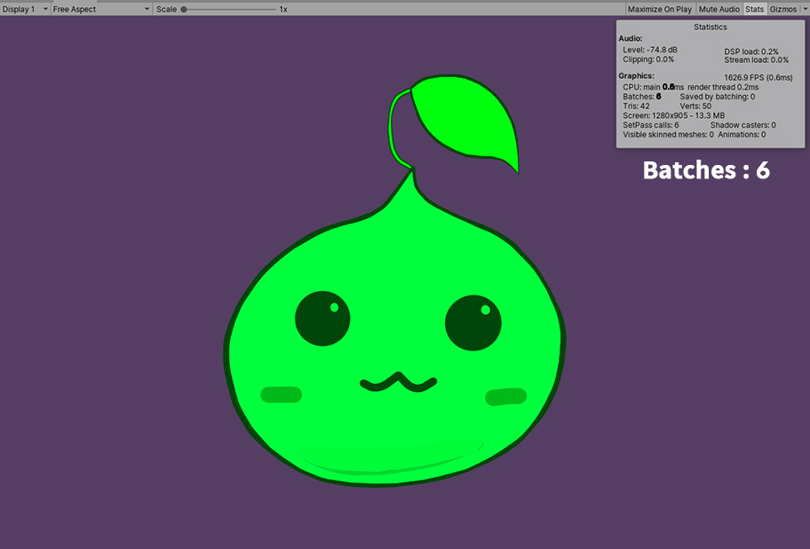
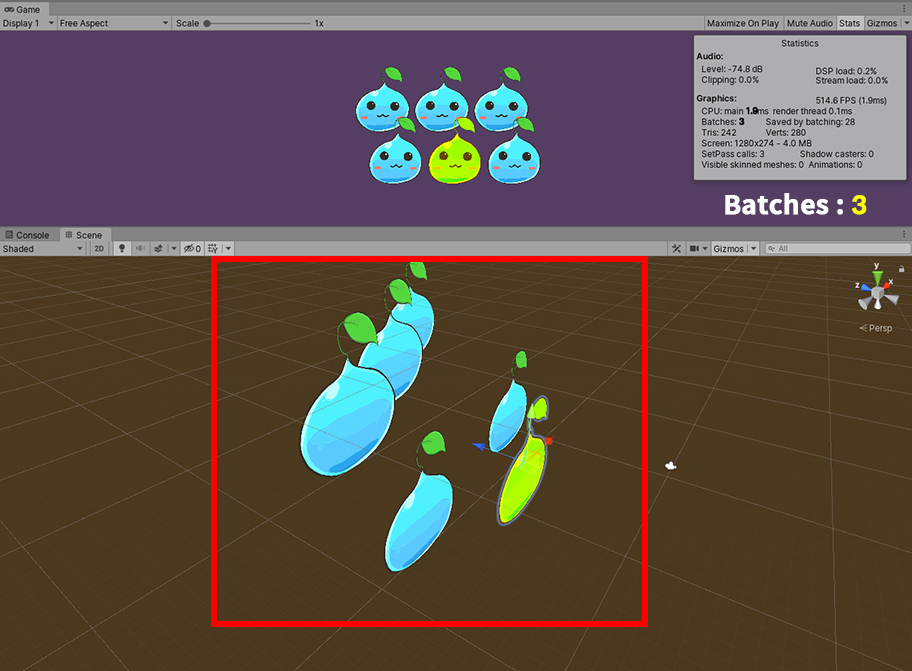
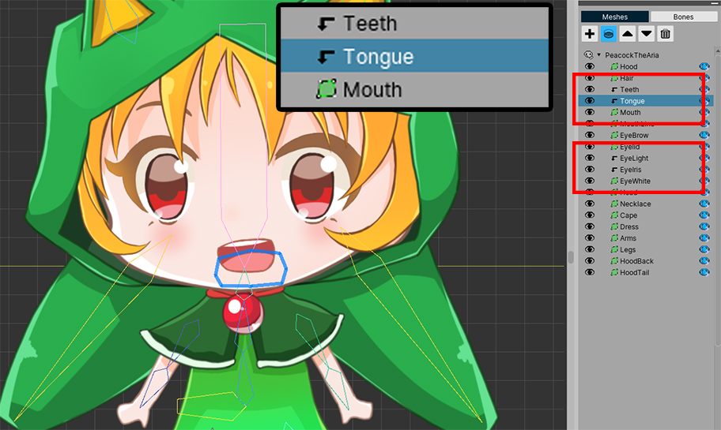
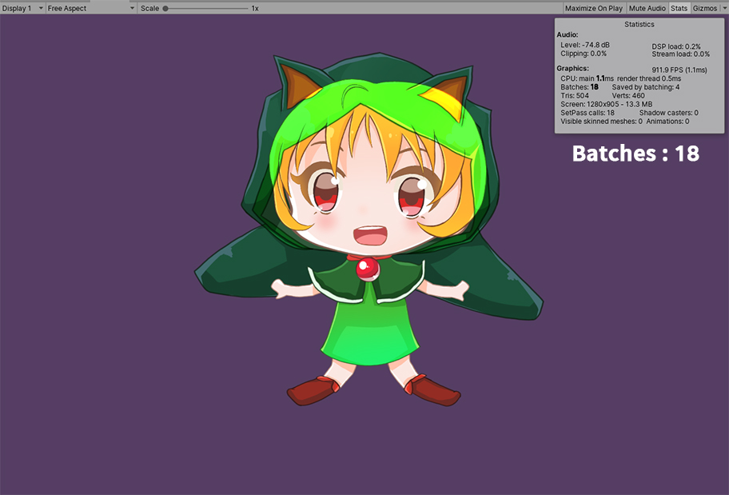
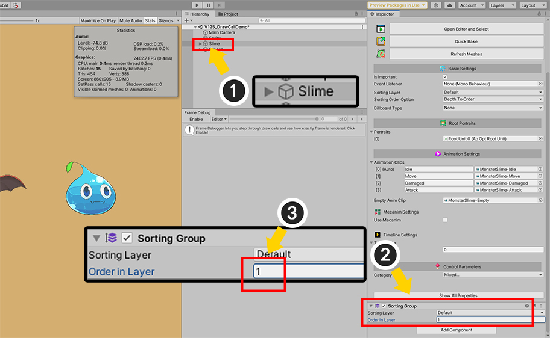
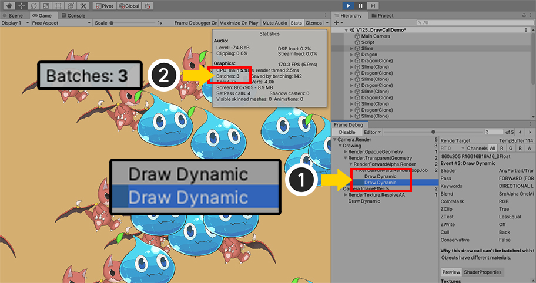

AnyPortrait > 메뉴얼 > 드로우콜 줄이기
드로우콜 줄이기
1.3.5
게임의 성능을 최적화하는 가장 효과적인 방법 중 하나는 드로우콜(Draw call)을 줄이는 것입니다.
드로우콜은 오브젝트나 기타 요소들을 렌더링하는 횟수를 의미합니다.
간단히 생각하면 오브젝트가 많을 수록 드로우콜이 증가할 것입니다.
하지만 렌더링 설정과 재질의 속성에 따라서는 드로우콜이 실제 오브젝트의 개수보다 더 감소할 수 있습니다.
드로우콜을 줄이는 방법에 대해서는 유니티 및 커뮤니티와 포럼의 문서들을 참고하시는 것을 권장합니다.
이 페이지는 드로우콜을 줄일 수 있는 AnyPortrait의 기능을 스크립트를 통해서 비교, 확인하는 내용을 담고 있습니다.
또한 드로우콜이 증가하는 속성도 소개합니다.
스크립트를 이용하는 경우 관련 페이지를 참고해보세요.
참고
유니티에서는 드로우콜 개수를 Batch Count로 표기합니다.
두 개념은 처리 상의 약간의 차이가 있지만, 대체로 값이 거의 같으며, 두 단어는 같은 것으로 취급되곤 합니다.
이 페이지에서도 이 두 단어는 혼용되며, 같은 의미로 사용됨을 참고하시길 바랍니다.
AnyPortrait의 드로우콜 관리 방식
AnyPortrait의 시스템은 드로우콜을 줄일 수 있는 다양한 기능과 최적화 기법을 제공합니다.
1. 드로우콜이 증가하지 않도록 최적화되는 경우
- 캐릭터의 메시들이 동일한 텍스쳐와 재질로 렌더링되면 드로우콜이 최적화됩니다.
- 공통된 텍스쳐와 재질을 공유하는 다수의 캐릭터들이 씬에 배치되면 드로우콜이 줄어듭니다.
- 캐릭터의 Transform의 Scale이 음수가 되어도 드로우콜은 증가하지 않습니다.
- 메시의 색상이나 텍스쳐를 바꾸는 스크립트 함수 중, 그 대상이 "이미지"인 경우 해당 캐릭터 내에서는 드로우콜이 증가되는 것이 방지됩니다. 하지만 "다른 캐릭터들"과의 드로우콜 공유는 해제됩니다.
2. 드로우콜이 증가하는 경우
- 텍스쳐가 다르거나 다른 재질을 사용하는 경우 드로우콜은 증가합니다.
- 색상 애니메이션이 적용되었거나 스크립트 함수로 특정 메시의 색상을 임의로 변경하였다면 드로우콜이 증가합니다.
- 카메라로부터의 Depth에 따라서 드로우콜이 증가될 수 있습니다. (동일한 재질의 메시들이 연속되어 배치된 경우에만 드로우콜이 줄어듭니다.)
- 클리핑 메시는 렌더 텍스쳐(RenderTexture)를 이용하기 때문에 드로우콜이 증가합니다.
- 쉐이더의 프로퍼티 중 AnyPortrait에서 사용하지 않는 프로퍼티를 사용한다면 드로우콜이 증가합니다.
AnyPortait의 드로우콜 최적화 단계는 3개입니다.
1. 다수의 캐릭터들이 최소의 드로우콜로 렌더링
- 드로우콜이 가장 최적화되는 단계이며, 같은 재질을 공유하는 캐릭터들이 동일한 드로우콜 내에서 렌더링이 됩니다.
2. 단일 캐릭터의 메시들이 최소의 드로우콜로 렌더링
- 단일 캐릭터 내에서 드로우콜이 최적화되는 단계입니다. 다른 캐릭터들과 드로우콜이 공유되지는 않지만, 이 단계에서도 드로우콜을 많이 줄일 수 있습니다.
3. 드로우콜이 공유되지 않는 메시가 존재
- 단일 캐릭터의 메시들 중 일부가 다른 드로우콜에서 렌더링이 되기 때문에 드로우콜이 증가합니다.
드로우콜을 최적화하기 위한 설정

유니티에서 드로우콜을 확인하는 가장 간단한 방법은 위와 같습니다.
(1) Game 화면을 선택합니다.
(2) Stats 버튼을 누릅니다.
(3) Batches 항목의 값이 드로우콜 개수입니다.
위 화면은 1개의 캐릭터만 배치된 씬인데 드로우콜이 6이나 되는 상태입니다.
드로우콜 배칭(Draw call batching)이 되지 않아서 모든 요소가 각각의 드로우콜에서 렌더링이 되고 있습니다.

Player Settings를 엽니다.
- 유니티 메뉴의 Edit > Project Settings를 열고 Player 항목을 선택하거나,
- 유니티 메뉴의 File > Build Settings에서 Player Settings를 선택합니다.
Other Settings의 항목 중에서 Dynamic Batching이 비활성화 되어 있다면 드로우콜이 최적화되지 않습니다.
Dynamic Batching을 켭니다.

게임을 실행하면 드로우콜이 6에서 2로 줄어듭니다.
(배경과 캐릭터 메시 전체에서 1개씩 드로우콜이 계산됩니다.)
Universal Render Pipeline에서의 설정
Universal Render Pipeline (URP)과 같은 Scriptable Render Pipeline을 이용할 경우 Dynamic Batching 옵션이 나타나지 않습니다.
기존의 Dynamic Batching보다 더 멋지게 최적화를 수행하는 SRP Batcher가 자동으로 켜지기 때문입니다.
즉, URP를 사용하면 위의 Dynamic Batching 옵션을 활성화하는 작업을 할 필요가 없어집니다.
SRP Batcher에 대해서는 유니티의 문서에서 자세한 설명을 보실 수 있습니다. (바로가기)
SRP Batcher 옵션은 기본적으로 숨겨져 있으므로, 이를 확인하고자 한다면 다음의 설명을 참고해보세요.
(URP가 설정되어 있어야 하며, 유니티 버전에 따라 차이가 있을 수 있습니다.)

(1) 유니티 에디터 메뉴의 Edit > Preferences...를 열고, Core Render Pipeline 메뉴를 선택합니다.
(2) Additional Properties의 Visibility 항목의 값을 All Visible로 변경합니다.

(1) 현재 적용되어 있는 URP Asset을 선택합니다.
(2) SRP Batcher와 Dynamic Batching 옵션을 확인할 수 있습니다.
SRP Batcher가 켜져있다면 이미 최적화가 되어 렌더링이 되므로 Dynamic Batching을 켜지 않아도 됩니다.
1개의 캐릭터에서 메시의 색상 설정 방법에 따른 드로우콜 변화 비교
메시의 색상을 변경할 때, 어떤 방식을 이용하는지에 따라서 드로우콜이 달라집니다.
이것은 AnyPortrait의 드로우콜 관리 방식과 관련이 있습니다.
아래의 예시를 보고 최적화를 해보세요.

모디파이어를 이용하거나 "SetMeshColor(string transformName, Color color2X)" 등의 함수를 이용하여 특정 메시의 색상을 바꾼 상태입니다.
이 경우는 최적화 단계 중 "가장 낮은 단계"인 각각의 메시들의 드로우콜이 서로 공유되지 않는 상태입니다.
색상이 바뀐 메시가 별도의 드로우콜에서 렌더링이 되면서, 드로우콜이 4로 증가하였습니다.
색상 애니메이션은 편리한 방식이지만, 드로우콜이 증가할 수 있으므로 주의하셔야 합니다.
만약 메시의 색상이 기본값인 (0.5, 0.5, 0.5, 1.0)으로 돌아오면 드로우콜이 감소하며,
"ResetMeshMaterialToBatch(string transformName)"과 같이 재질 설정을 복구하는 함수를 사용하여 드로우콜을 최적화할 수도 있습니다.
메시들의 색상을 일괄적으로 모두 변경한다면 어떻게 되는지 확인해봅시다.
메시들의 색상을 모두 바꾸는 스크립트 함수는 다음의 두가지를 주로 이용할 것입니다.
- SetMeshColorAll(Color color2X) : 모든 메시들의 색상을 재질에 관계없이 바꿉니다.
- SetMeshColorAll(string optTextureName, Color color2X) : 입력된 텍스쳐(이미지)를 사용하는 메시들의 색상을 모두 바꿉니다.
거의 동일해보이는 함수들이지만, 처리 방식에 따라 드로우콜의 차이가 있습니다.

SetMeshColorAll(Color color2X) 함수를 이용한 결과입니다.
이 함수는 "SetMeshColor" 함수가 모든 메시에 일괄적으로 적용된 것입니다.
SetMeshColor 함수가 "가장 낮은 최적화 단계"의 함수이기 때문에 색상에 관계없이 메시들은 재질을 더이상 공유하지 않습니다.
따라서 드로우콜이 최적화 되기 전의 값인 6이 되었습니다.

SetMeshColorAll(string optTextureName, Color color2X) 함수를 이용한 결과입니다.
인자로 이미지의 이름을 넣었기 때문에, 이 함수는 "메시"를 대상으로 하는 것이 아니라 "이미지"를 대상으로 합니다.
서로 공유하는 재질의 색상을 직접 변경하기 때문에, 색상이 변경된 것과 관계없이 메시들은 계속해서 재질을 공유합니다.
따라서 이 함수는 "중간 레벨의 최적화 단계"로서 "단일 캐릭터 내에서의 드로우콜 최적화"를 수행합니다.
결과적으로 드로우콜은 최적화된 상태인 2의 값을 유지합니다.
1.3.5
AnyPortrait v1.3.5부터는 SetMeshColorAll(Color color2X)와 같은 일괄 변경 함수를 사용해도 드로우콜이 최적화된 상태를 유지하도록 개선되었습니다.
다수의 캐릭터들이 씬에 배치되었을 때의 드로우콜 비교

다수의 캐릭터들이 배치되면 드로우콜은 증가합니다.
다양한 종류의 오브젝트들이 배치되면 드로우콜은 대체로 객체 수 만큼 증가합니다.
그러나 만약 AnyPortrait로 제작된 캐릭터들만 배치된 상태에서, 그 캐릭터들이 같은 텍스쳐와 재질을 공유한다면 드로우콜은 크게 줄어듭니다.
(조건만 맞다면 꼭 원본의 캐릭터가 복제되지 않아도 재질이 공유될 수 있습니다.)
위의 경우, 6개의 캐릭터가 씬에 배치되어 있습니다.
그러나 AnyPortrait의 "최고 레벨의 최적화 단계"를 유지한 상태에서는 드로우콜이 크게 감소하여 2로 줄어든 것을 볼 수 있습니다.
색상을 변경하지 않고, 기본 재질 속성을 사용하고 같은 텍스쳐를 이용한다면, 별도의 작업이 없어도 AnyPortrait로 제작된 캐릭터들은 서로를 인식하여 드로우콜을 최적화합니다.

한개의 캐릭터를 선택하여 SetMeshColorAll(string optTextureName, Color color2X) 함수를 적용한 상태입니다.
앞서 "중간 레벨의 최적화 단계"인 이 함수를 적용하면, 해당 캐릭터는 더이상 다른 캐릭터들과 재질을 공유하지 않습니다.
따라서 드로우콜이 2에서 12로 증가합니다.
물론 전체 30개의 메시들과 1개의 배경을 합한 예상되는 최대값의 드로우콜인 31보다는 꽤 적은 값입니다.
하지만 가장 최적화된 값인 2에 비해서는 많이 증가한 것 같습니다.
이 결과는 드로우콜이 배칭(Batching)되어 줄어들 조건 중 하나인 "연속된 렌더링 순서"에 따른 것입니다.
아래의 추가 설명을 확인해보세요.

현재 씬에 캐릭터들이 어떻게 배치되어 있는지를 확인해봅시다.
위의 캐릭터들은 약간 뒤에 있으며, 같은 줄의 캐릭터들은 동일한 Z 위치를 가지고 있습니다.
색상이 변경된 캐릭터와 같은 Z 위치를 가지기 때문에, 서로 다른 재질의 메시들의 렌더링 순서가 서로 섞여버렸습니다.
따라서 렌더링을 순차적으로 하면서 렌더링되는 재질들이 전환되는 상황이 많이 발생하는 것입니다.
이러한 상황은 몇개 그룹의 객체들이 재질을 서로 공유하더라도 효과적으로 드로우콜을 줄이지 못합니다.

캐릭터들의 Z 위치를 변경하여 드로우콜이 어떻게 변하는지 확인해봅시다.
단순하게 앞뒤로 배치되도록 만들어보았습니다.
Z 위치에 따라서 순차적으로 렌더링을 할 때, "색상이 바뀐 캐릭터"의 메시들이 렌더링되는 순서에서는 다른 메시들이 뒤섞여서 렌더링을 되는 상황을 피했습니다.
따라서 드로우콜의 개수가 12에서 다시 4로 크게 줄었습니다.
이 원리를 이해한다면 조금 더 최적화를 할 수 있습니다.

"색상이 바뀐 캐릭터"가 가장 앞에 나오도록 배치하였습니다.
다른 캐릭터들의 메시들이 같이 렌더링될 수 있게 의도적으로 배치하였기 때문에 드로우콜은 기대 가능한 최소값인 3이 되었습니다.
이 경우는 가장 완벽히 최적화된 상태이지만, 실제로 게임에서 드로우콜을 줄이기 위해서 객체의 위치를 바꾸는 것은 어렵습니다.
대신, 드로우콜이 줄어들기 쉬운 상황이 자주 발생하도록 씬을 구성하는 것을 권장합니다.

모든 캐릭터에 SetMeshColorAll(string optTextureName, Color color2X) 함수를 적용하면 어떻게 될까요?
이 함수는 "중간 레벨의 최적화 단계"이기 때문에, 일단 호출이 되면 "캐릭터 내부에서의 드로우콜 최적화"는 유지되지만 "다른 캐릭터와의 드로우콜 최적화"는 더이상 수행되지 않습니다.
변경된 색상과는 무관하게 드로우콜은 다소 증가하여 7이 됩니다.
7의 값의 드로우콜은 캐릭터들의 Z 위치가 적절히 분산된 경우에 나타나며 (배경 1 + 캐릭터 6),
위에서 설명한 바와 같이, Z 위치가 같아서 렌더링 순서가 겹친다면 드로우콜 최적화가 아예 되지 않을 수 있습니다.

위 화면은 동일한 상황에서 캐릭터들의 Z 위치만 동일하게 만든 상태입니다.
드로우콜 최적화는 전혀 이루어지지 않아서 최대값인 31이 되었습니다.
드로우콜은 유니티 엔진의 내부적인 처리이므로 Z 위치 외에도 다양한 증감 원인들이 있습니다.
다른 문서를 통하여 드로우콜을 최적화 할 수 있는 방법을 적용해보세요.
드로우콜이 증가할 수 있는 경우
드로우콜이 증가될 수 있는 조건들은 많습니다.
아래는 위의 함수나 색상 모디파이어를 제외한 AnyPortrait의 기능들 중에서 대표적으로 드로우콜을 증가시키는 것들을 소개합니다.

한개의 캐릭터에 여러 개의 이미지가 사용된다면 드로우콜은 증가합니다.
여러 개의 작은 이미지보다는 한개의 큰 이미지를 이용하는 것이 효과적일 수 있습니다.
(빌드 환경과 기기에 따라 다를 수 있으므로 미리 확인을 하세요.)

클리핑 메시는 렌더 텍스쳐(Render Texture) 기법을 이용합니다.
렌더 텍스쳐 기법의 특성상, 클리핑 메시는 다른 메시와 드로우콜을 공유하지 않습니다.
클리핑 마스크 메시, 클리핑되는 메시 모두 렌더링 될 때 드로우콜이 증가됩니다.

메시의 Shader Setting을 기본값과 다르게 설정하면 다른 메시들과 재질을 공유할 수 없습니다.
이 경우엔 이 메시는 항상 "가장 낮은 레벨의 최적화 단계"가 됩니다.
Blend 방식을 Alpha Blend 외의 값으로 설정하거나, 기본값과 다른 재질 세트(Material Set)를 사용하는 경우가 이에 해당합니다.
스크립트 함수(SetMeshCustomFloatAll 함수 등)나 이 화면에서 Add Custom Property 기능을 이용하여 재질의 커스텀 속성을 이용하는 것도 드로우콜이 증가하는 원인이 됩니다.

게임에서 확인해보면, 일부 메시들에 의해서 드로우콜이 많이 증가한 것을 볼 수 있습니다.
Sorting Group을 이용해서 드로우콜 줄이기
위의 설명에도 불구하고 드로우콜이 증가하는 경우는 많습니다.
특히, 서로 다른 캐릭터들이나 오브젝트들이 많이 배치된 상태에서는 드로우콜을 줄이기가 어렵습니다.
AnyPortrait와 같이 Mesh Renderer들의 조합으로 구성된 오브젝트들이 다수가 등장한다면, 드로우콜이 크게 증가할 수 있습니다.
이때 Sorting Group을 이용하여 드로우콜을 효과적으로 줄일 수 있습니다. (관련 페이지)
특히, 이번에는 유니티의 프레임 디버거(Frame Debugger)를 이용해서 렌더링 내역을 상세하게 알아보겠습니다.

두 종류의 캐릭터들이 배치된 씬입니다.
두개의 캐릭터 모두 AnyPortrait로 제작되었습니다.

게임이 시작되면 두개의 캐릭터들이 10개 더 복제되어 생성되도록 간단한 스크립트를 작성해보았습니다.
복제된 캐릭터들이 임의의 범위 내에서 위치하도록 작성해보았습니다.

게임을 실행해봅시다.
(1) 스크립트가 동작하면서 캐릭터들이 복제됩니다.
(2) 드로우콜이 27로 나타났습니다.
임의의 위치로 복제되므로 게임 실행시마다 결과는 조금씩 다르지만,
캐릭터가 증가하면서 드로우콜도 같이 거의 비례하듯이 증가된 점이 매우 아쉽습니다.
복제된 캐릭터들은 원본과 같은 재질이므로 가능하다면 드로우콜을 공유하게 만드는 것이 좋습니다.

프레임 디버거를 실행해서 렌더링 내역을 확인해봅시다.
Window > Analysis > Frame Debugger를 실행합니다.

(1) 게임을 실행하고 (2) Enable 버튼을 누릅니다.
(3) 현재 프레임에서 렌더링이 어떻게 진행되었는지 나타납니다.

반투명 재질을 가지는 메시를 확인해야하므로 "Drawing > Render.TransparentGeometry > RenderForwardAlpha.Render > RenderForward.RenderLoopJob"을 확인합니다.
(1) 메시들이 렌더링된 순서들이 나타납니다. Draw Dynamic은 여러개의 메시들이 1개의 드로우콜에서 같이 렌더링된 것을 의미하므로 어느정도 최적화가 된 셈입니다.
문제는 (2)와 같이 각각의 메시들이 하나씩 렌더링되는 현상이 발생한다는 것입니다.
위와 같은 결과가 나타난다면 렌더링 과정에서 서로 다른 재질을 가진 메시들이 순서대로 렌더링이 되었다는 것입니다.
이것은 특히 여러개의 메시들로 구성된 AnyPortrait의 캐릭터에서 나타나기 쉬운 현상입니다.
메시들이 각각 렌더링되는 도중에, 비슷한 Z값을 가진 다른 캐릭터의 메시들이 섞여서 렌더링이 진행된 것입니다.
Sorting Group을 이용하면 위와 같이 "다른 캐릭터의 메시들과 섞여서 렌더링되는 것"을 막을 수 있습니다.

(1) AnyPortrait 캐릭터들을 각각 선택합니다.
(2) Sorting Order Option의 값을 Depth To Order로 변경합니다.
(3) Sorting Group 컴포넌트를 추가합니다.
(Sorting Group 컴포넌트는 AnyPortrait 캐릭터의 부모 GameObject에 추가해도 됩니다.)

다시 게임을 실행하고 프레임 디버거의 Enable 버튼을 눌러서 결과를 확인해봅시다.
(1) 모든 렌더링 단계가 Draw Dynamic으로 표기되는 것을 볼 수 있습니다.
또한 Sorting Group 단위로 렌더링이 이루어지기 때문에 드로우콜이 많이 줄어들었음을 볼 수 있습니다.
드로우콜을 꽤 많이 줄였으며, 현재의 최적화 결과는 보편적으로 게임 프로젝트에 적용되기 좋은 상태입니다.
하지만 여기서 조금 더 드로우콜을 줄일 수 있다면 좋을 것 같습니다.
현재 단계는 "캐릭터 단위로 렌더링이 수행"되는 것이지만, 가장 최적화된 단계는 "재질 단위로 렌더링이 수행"되는 것이기 때문입니다.
이 최적화 전략은 게임에 따라서는 어려울 수 있지만, 가능하다면 한번 시도해보시는 것도 좋을 것입니다.

이 방법은 같은 종류의 캐릭터들마다 독자적인 렌더링 순서를 가진다면, 같은 재질을 가진 메시들이 동일한 드로우콜을 가질 수 있는 점을 응용한 것입니다.
(1) 두개의 캐릭터 중 하나를 선택합니다. 이 예제에서는 "슬라임" 캐릭터를 선택했습니다.
(2) Sorting Group에서 (3) Order in Layer의 값을 기본값인 0이 아닌 "1"로 변경합니다.
다른 캐릭터들이 더 추가된다면, 각각의 캐릭터 종류마다 서로 다른 Sorting Order를 가지도록 설정합니다.

(1) 게임을 실행하고 프레임 디버거에서 결과를 확인해보면 캐릭터 수가 아닌 캐릭터 종류만큼 드로우콜이 발생된 것을 볼 수 있습니다.
(2) 배경을 포함하면 단 "3"의 드로우콜 카운트만 발생했습니다.
이 방식에서는 캐릭터 종류에 따라서 렌더링 순서가 고정되는 문제가 있습니다.
(위 이미지에서 모든 슬라임은 모든 드래곤보다 앞에 위치합니다.)
하지만 렌더링 순서가 중요하지 않는 게임이며 캐릭터가 많이 등장한다면, 이 최적화 전략을 활용해보시는 것도 좋을 것입니다.